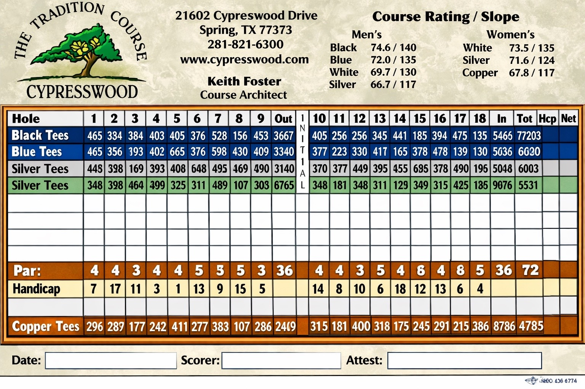

Scorecard
18 holes • 6 players • gross
Align
Save Image

Alignment
Use sliders to line up the tap boxes exactly on the blank grid.
Close
Grid Start X (%)
Grid Start Y (%)
Cell Width (%)
Cell Height (%)
Column Gap (%)
Row Gap (%)